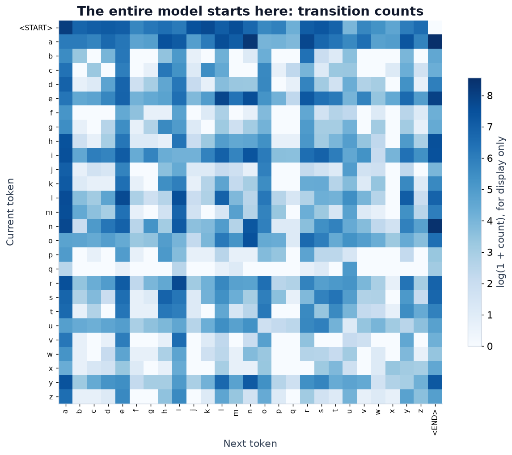
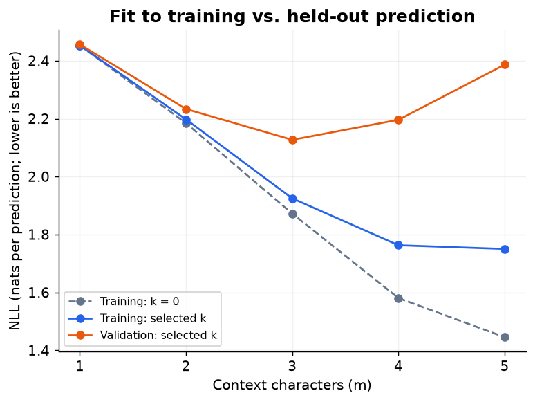
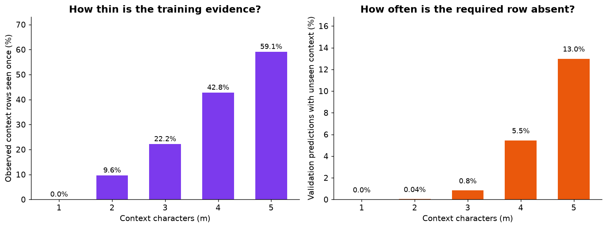

LLM from scratch
A language model built step by step, from counting to a small Transformer. 3 of 14 episodes published.
Each episode has a theory video worked by hand, a build video, a notebook, and tests that fail if the concept is implemented wrongly. The number worked by hand in the theory video and the number printed by the code must match. The series ends with a small decoder-only Transformer, trained on a laptop.
Python · NumPy · Jupyter · Matplotlib · unittest
| # | Episode | Code |
|---|---|---|
| Part 1 · Count | ||
| 1 | The smallest language model | Python |
| 2 | Trigrams and the sparsity wall | Python |
| Bridge: counting to learning | — | |
| Part 2 · Learn | ||
| 3 | From counts to weights | NumPy |
| 4 | Gradients, by hand | NumPy |
| 5 | Autograd from scratch | Python |
| 6 | Enter PyTorch | PyTorch |
| 7 | Embeddings and the MLP model | PyTorch |
| 8 | Making training work | PyTorch |
| Part 3 · Attend | ||
| 9 | Why fixed context breaks | PyTorch |
| 10 | Self-attention from scratch | PyTorch |
| 11 | Multi-head attention and the block | PyTorch |
| 12 | Build the GPT | PyTorch |
| 13 | Tokenization for real | PyTorch |
| 14 | Train it and make it talk | PyTorch |
1. The smallest language model
A character bigram model predicts the next character from the current one, using counts of which character follows which. The episode builds the same model twice: once by hand on two names, then in code on a real dataset.
anvendstart1000a0¼¼½n½½00v1000Next-character probabilities from anna and ava. The path for ana is in red.By hand, on two names. Trained on anna and ava, small enough to count on paper, the model gives the unseen name ana probability 1 · ¼ · ½ · ½ = 1/16, a loss of ln 2 ≈ 0.693 nats per prediction. Try it with this two-name model:

| Model | Test loss |
|---|---|
| Uniform: every next character equally likely | 3.296 |
| Unigram: letter frequencies, ignoring context | 2.819 |
| Bigram, add-k smoothing (k = 0.3) | 2.460 |
Smoothing adds a small count k to every pair, so a pair never seen in training no longer gets probability zero. k was chosen on the validation names.
2. Trigrams and the sparsity wall
The same 29,494 US first names and the same training, validation and test split as episode 1, but the model now looks at more than one previous character: 2 (a trigram), then 3, 4 and 5. Training loss keeps falling as the context grows. Loss on held-out names is lowest at three characters and rises after that.Smoothing k was chosen on the validation names; the frozen settings were then scored once on test. The result holds for this dataset and add-k smoothing, not for every n-gram method.

The reason is thin evidence. With longer contexts, more of the contexts seen in training appear only once, and more held-out predictions need a context that never appeared in training at all.

Test loss for every context length, with the number of the 21,053 test predictions whose context was never seen in training:
| Context | Model | k | Test loss | Unseen-context predictions |
|---|---|---|---|---|
| 1 | Bigram | 0.3 | 2.460 | 0 |
| 2 | Trigram | 0.3 | 2.239 | 6 |
| 3 | 4-gram | 0.1 | 2.130 | 148 |
| 4 | 5-gram | 0.1 | 2.196 | 1,114 |
| 5 | 6-gram | 0.1 | 2.387 | 2,676 |
Bridge: counting to learning
What count models can and cannot do, including backoff and interpolation, and the three pieces the next part adds: adjustable weights, training, and a structure that reuses weights. Video, 15 min.
3. From counts to weights
The same bigram task with a table of adjustable scores instead of counts: look up the score row for the current character, turn it into probabilities with softmax, and score the target with negative log-likelihood. Written in NumPy.
One score, changed by hand. To see what a single weight does, the episode changes one score manually on the anna and ava example. This is not training; it only shows how one score moves the probabilities and the loss. With every score at zero, each of the four next characters has probability ¼, and the loss over the nine training targets is ln 4 ≈ 1.386. Setting one score, W[a, end], to ln 2 lowers the loss to 1.331. Setting it to ln 100 overshoots and raises it to 1.807. Finding good values automatically is what training does, starting with gradients in episode 4.